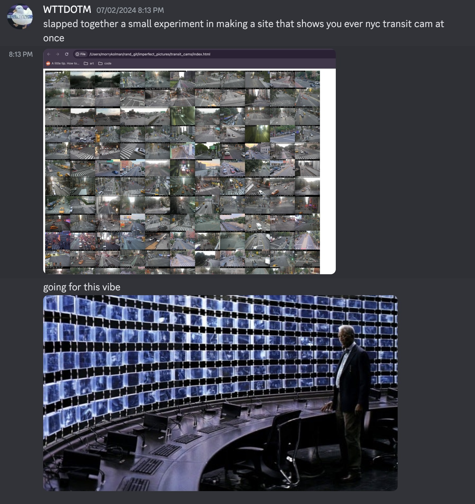
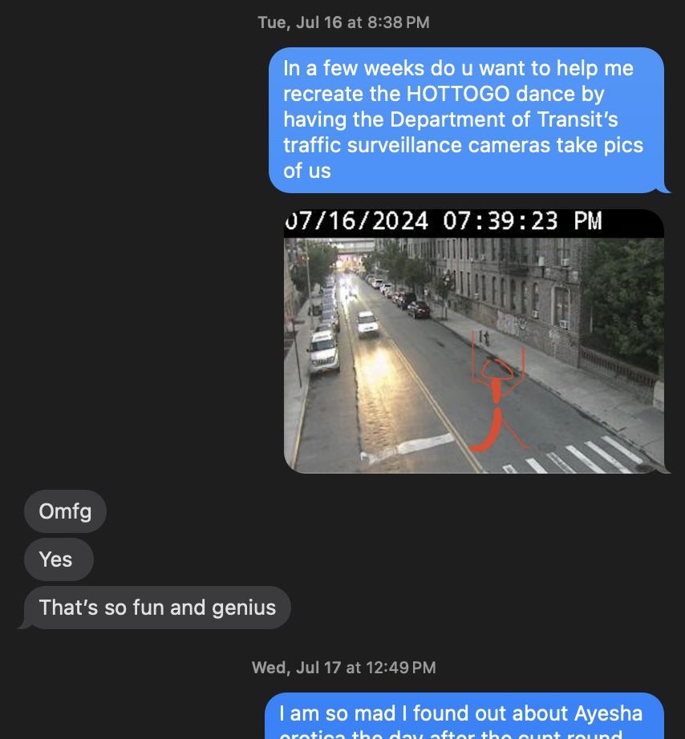
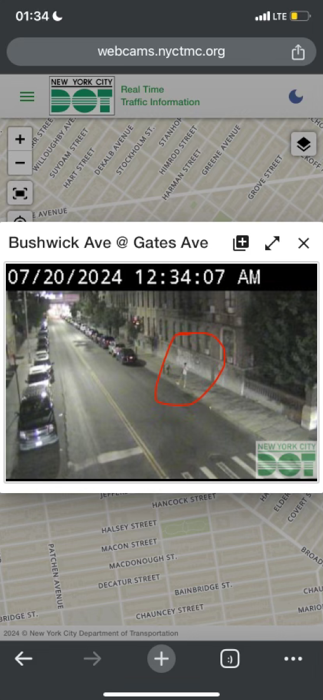

Back in August, I made the site TrafficCamPhotobooth.com for fun, and it ended up blowing up. Traffic Cam Photobooth lets people take selfies with traffic cameras, and has had hundreds of thousands of users and received international press coverage.
It seems like a simple site, and it is, but it’s also the product of a pretty winding process. Being that it's now nominated for a Webby (vote for me here!), I wanted to give it some proper documentation. This is Part 1 of a multi-part series of posts that will go up regularly from now until the end of the voting period on April 17th, please follow along!
Two years ago I was hunting through assorted Open Data NYC pages and found out that, while not well-documented, the NYC Department of Transportation hosted regularly updating, publicly available image feeds of their traffic cameras. Surveillance sucks, and sure, this is about surveilling cars but (a) it still catches people in its gaze and (b) cars ALSO suck. Anyway, the silver lining is that these cameras constitute one of the easier surveillance methods to access, so I took a mental note of it and forgot about it for while.
Then, back in June 2024, two things happened:
According to my phone, I ended up calling Chris on July 16th, and one topic that came up was his recent exploration into iPhone shortcuts. I had always seen the app on my phone, and had futzed around with it a bit, but I'd never given it much thought. Chris encouraged me to give it a second look. A great engineer in his own right, he ran through all the automations he had set up for himself, and talked about the scripting gods on r/shortcuts that had taken the tool to the next level. I was only sold as much as anyone being told to adopt a new language or app is, but sold enough to pick it up just a few days later.
That sunday rolls around, and I have a completely open day. I love a blank column on Google Calendar, and a day is a good unit of time to get something done. I wake up thinking, as I imagine most people do, about traffic cameras. They had been on my mind for a while. Looking back at my chat history with my friend Alex in the Discord server for our group We Make Internet, I can see that I had made a proof of concept for a Morgan-Freeman-At-The-End-Of-The-Dark-Knight-esque site that showed you all of the feeds at once in a grid on July 2nd.
Click to expand.
Similarly, back when I had called Chris, later in the day I texted my other friend Alex (all my close friends, family, and therapist know them by "Guy Alex" and "Girl Alex") and brought up the idea of using the cameras to spell out Chappell Roan’s HOTTOGO dance (I leave it to the reader to figure out which Alex is which).
Click to expand.
I kept trying to figure out how to take these ideas a step further. They were nifty, but not exactly interesting. The cameras didn’t have video feeds, so the Dark Knight concept wouldn’t look great, and god bless Ms. Roan but I wanted to make something more than just an album/carousel of pictures.
That entire month, whenever I passed by a traffic camera I knew of (mostly just the ones on Bushwick ave), I would use it to take a selfie of myself. They weren’t great, and sometimes it was hard to see me, but it was a fun bit. I had thought briefly about how to make this more automatic, but tossed aside the idea because (as will come up later) I really did not want to deal with building an app.
Click to expand.
Then, during my daily shower zone-out and thanks to Chris bringing shortcuts back into my life, I remembered the first time I had seen someone talk about using shortcuts online, and how they had set theirs up so that their coffee maker would start as soon as they entered the house. The thing that stood out to me was the location trigger: `enter area`, `initiate action`. App-like functionality without an app. The traffic cameras are all on a map, and the dataset of all 900-something of them has lat/long coordinates for each one (more to come on this in the next post). With a bit of manual effort, I could pin down the exact location they look at, and then run a shortcut when I get there. Best of all, one action you can take with a shortcut is to send an HTTP request. Now - however ironically given that my hot water was running out - we were cooking with gas.
I’m a big believer in tiny tiny MVPs, and for this one, the requirements were simple: set up server to scrape and store a cache of the most recent 3 minutes of my closest traffic camera, set up an endpoint that emails me the most recent images from that cache whenever it receives a GET request, and set a shortcut to hit that endpoint whenever I enter and exit that camera’s range.
Also, I wanted to make a video about it. I’d been wanting to revive my old TikTok presence (I have about ~77k followers there) and in general start talking about my work more. I figured that while neither were trivial tasks, if I just recorded as I wrote the code, I could probably end the day with both of them.
I was right. The shortcut setup takes two minutes, and with a bit of Node, Express, SQLite, and Fly.io, I have a server up and running within a few hours. I enter an area, automatically send a request to one of my Fly.io endpoints, and it will send the recent pictures it has from the camera to my email (these days I'd probably try to do it with a Val but whatever).
It was finicky, but after a couple tries I finally got it to work, and received a bunch of pictures of myself in my inbox. In retrospect, I think even the scraping and delivery of the pictures could have been accomplished through shortcuts with a bit more elbow grease, but done is better than perfect. Satisfied, I cut the video together and posted it.
It was not my best video, and I could watch it back and list off all of its flaws, but I can do that because I’ve made enough of them (over 500 by my count) that I’m at the point where with best practices and a bit of luck they can take off. This one in particular didn’t truly soar, but it did start to rack up tens of thousands of views over the next few days (now it sits right above ~100k), which some nice validation. The comments were pretty varied. Some people thought it was extremely cool, others bemoaned the surveillance state, many talked about how I shouldn’t release this because it could be used for stalking people (how they think this would happen without access to the person's physical device is an open question), and one guy even told me off for accessing the cameras and not destroying them instead.
All in all, pretty standard internet comments section.
The biggest request, however, was for me to make this an app. But again, I do not want to make an app. There are a few reasons why this one in particular would be a bad idea:
When Alex (guy Alex) and I talk about stuff we like on the internet, we spend as much if not more time talking about why we like it than the actual thing itself. To me, why people thought this idea was fun was clear. First, people love getting pictures of themselves. Second, it turns the tables on surveillance. Traffic cameras go from things out of your control that passively capture you as you walk by, to cameras you can leverage to take your own photos. Neither of these require an app, they just require a way to find those cameras and get those images. And so, the idea for TrafficCamPhotobooth.com was born.
Check in tomorrow for the next step in the process!
If you liked this post, please support me by voting for Traffic Cam Photobooth to win a Webby! Here's a big green button that brings you right to the voting page :)
Now nominated for a Webby!
Total Votes: loading...
vote and reload to see it change :)